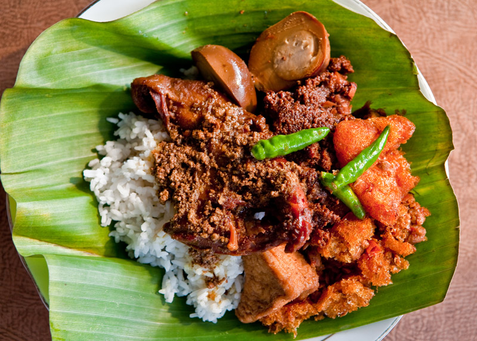
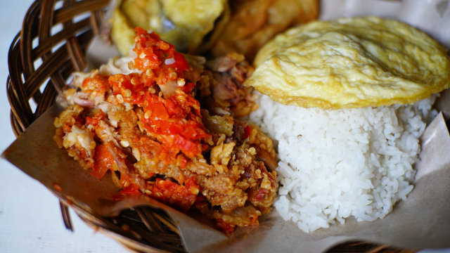

Rp.35.000
About Us
Aplikasi kuliner jogja adalah aplikasi yang digunakan untuk para masyarakat jogja untuk mencari berbagai kuliner yang tersedia di kota Yogyakarta. Aplikasi ini cukup bermanfaat terutama bagi para pelajar di kota Yogyakarta tersebut

